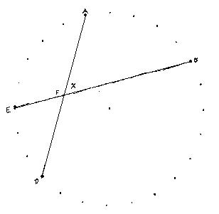
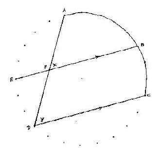

Then I gave them the problem of finding the angle x formed by 2 chords EB and
DA, intersecting within a circle at F(not at the center). This was a very
exciting event!
 
They drew a chord DC parallel to EB (same number of degrees in the arcs ED and
BC). By corresponding angles, angle x = angle y. Angle y is an inscribed angle
whose intercepted arc is AC = 120 degrees. Therefore angle y=1/2 of 120 = 60
degrees, and then angle x = 60 degrees!
I thought that was a very unique and simple way of finding angle x...don't you
agree?
One could show that this is equivalent to what we read about in most geometry
books- try that.